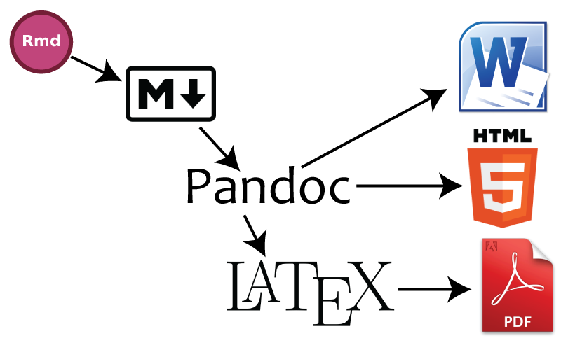

1 传统写作的困境
研究项目立项–>>收集数据–>>整理数据–>>分析数据–>>撰写论文/报告
这应该是很多研究者的开展研究工作的基本流程，但是研究工作并不总是一帆顺利地沿着这个方向进行。 我们可能已经撰写完成研究报告，但是收集的数据有了更新，或者需要纳入更多的研究对象，再或者原先某些缺失的数据通过其它渠道进行了补充，那么我们就需要更新研究报告/论，再重新分析数据，各种统计过程必须要重新来过，然后再把统计结果一点一点粘贴到word里，是不是想想这个过程就很头疼。
这是我们在用office套件，比如word、excel、powerpoint等软件在撰写报告时非常常见的情形。
2 可重复性报告
但是Rmd/rmarkown文档及knitr的出现解决了这一问题，Rmd格式文档通过把通用的markdown和嵌入的R语言代码块结合起来，通过knitr包把rmd文档编译成统一的md文档，然后再通过pandoc转成各种格式，如html、PDF、Word、slides等。

这样我们在写研究报告的时候，就可以利用rmd把统计过程整合到统计报告的撰写中来，如果原始数据有变化，只需要重新执行一次编译过程就能更新整个研究报告了。 其实这个过程也就是我们所说的可重复性数据分析或者可重复性报告。
我们所说的可重复性报告是指利用代码把数据分析过程串起来，最终生成可重复性的报告。其实说到可重复性报告，应该首先说下文学编程，它是一种理念，强调以自然语言呈现计算逻辑，文本和代码相互混合的方式，并且从计算机代码的执行逻辑过渡到人的思维逻辑。我们现在使用的R Sweave，R markdown，以及J’upyter都是实现文学编程的具体方式。
3 R markdown
R markdown 是R实现可重复性数据分析/报告的主要生产力工具，自诞生以来，在Rstudio的加持下，其周边生态越来越完善，实现的功能也越来越多。比如做网站、博客、制作幻灯片、写书、写论文等。

blogdown包可以结合hugo生成比较漂亮的网站或博客网站，bookdown可以生成各种形式的书籍包括word,pdf,epub,html等，xaringan可以做出容易在网络分享的漂亮幻灯片。
但是R markdown也存在一些缺点，虽然这些包能够实现非常强大的功能，但是各种包之间缺乏统一的语法，实现同一功能的语法各有不同，对于使用者来说，需要付出很大的时间成本在各种包之间切换并记住不同的语法去实现不同的功能。
4 从R markdown到Quarto
估计是看到文学编程的巨大潜力，在Rstudio的支持下，Quarto应运而生，官网给它的定义是：“基于pandoc的开源科学与技术出版系统”。
Quarto® is an open-source scientific and technical publishing system built on Pandoc

Quarto相比于R markdown具有如下特点：
- 它可以独立于R、Rstudio或者其他软件如python等编程或统计软件，支持在Macos、Linux、Windows系统运行；
- Quarto继承了一些Rmd包的特点、如blogdown、bookdown、xaringan等；
- 在生成website、blog、book、slides等各种格式中有了统一的语法，缩小了使用者的学习成本；
- 支持的语言包括R、Python、Julia和Observable；
- quarto有了新的文档格式，文档扩展名为“.qmd”, 代码块选项的形式有了变化。
- 支持科技写作的特征，如公式、引用、交叉引用、图、表等。
对于本人来说，促使我从R markdown转换到Quarto的最主要的因素是统一的语法，在我使用Quarto进行内容创作输出website的时候，不必再学习一遍新的语法去生成幻灯片，这就大大缩小了使用的时间成本。
首先，我把自己的个人网站从原来的Blogdown+Hugo的生成方式转换到单独利用Quarto的生成方式，这样我就可以利用上面所说的各种quarto的优点和新的特性了。但是相比与原来的blogdown+hugo的方式，quarto渲染网页的速度比hugo慢了不少，但是对于我来说，完全可以接受。
Quarto 有一点比较好，就是对R markdown格式文档的支持，这样你就不必把以前编写的Rmd文档全部改写成.qmd文档。
今天的总结到此为止吧，后面我会逐步把利用quarto进行科技写作或生成幻灯片中遇到的问题分享给大家。